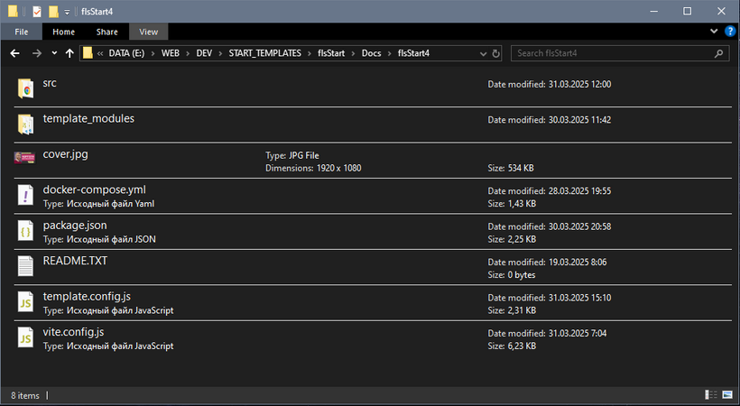
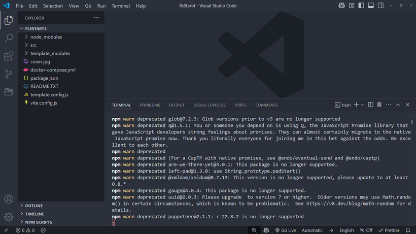
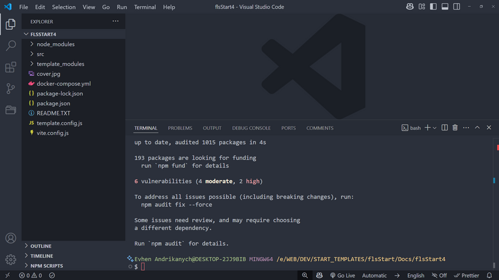
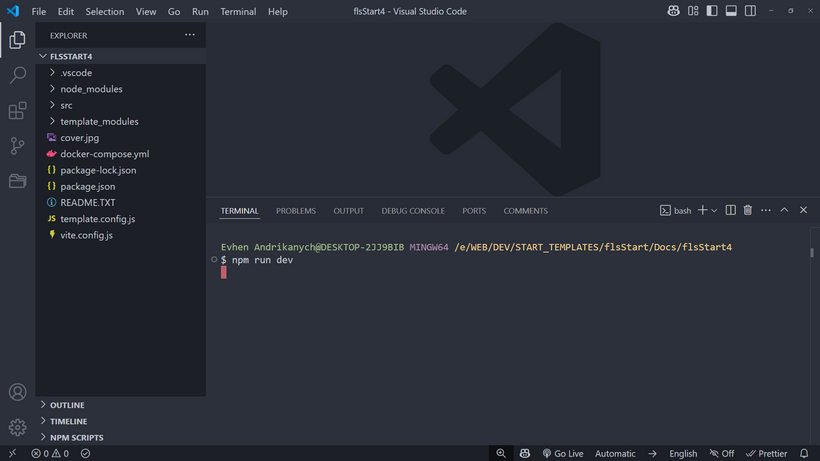
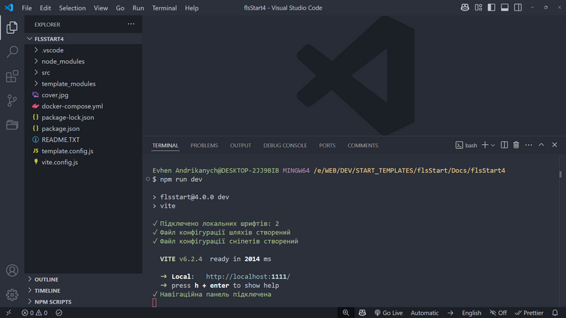

Для начала следует распаковать zip-архив в вашу папку проекта. Убедитесь, что папка и ее родительские папки не содержат в названии кириллицу, пробелы, символы # и !
Содержимое архива в папке проекта
Если вы до этого момента не пользовались NodeJS и пакетным менеджером NPM, следует скачать и установить Node.js. Скачивайте версию, рекомендованную для большинства.
Далее открываем терминал в этой папке проекта. Терминал может быть встроенным или открытым отдельно от редактора. Рекомендую использовать терминал GIT Bash.
После завершения установки необходимых инструментов введите команду npm i
В процессе установки в терминале могут появляться сообщения с меткой WARN желтым цветом. Эти сообщения можно игнорировать. Но если вы получаете сообщения ERR! красным цветом — это критическая ошибка, и ее нужно исправлять.
Предупреждения можно игнорировать
После успешной установки у вас появится папка node_modules и файл package-lock.json
Установка завершена
Подробнее об архитектуре папок и файлов ЧФ мы поговорим в следующем разделе, а пока продолжаем подготовку к работе
1. Режим разработчика. Команда запуска npm run dev
2. Режим разработчика с внешним IP. Команда запуска npm run online
3. Режим продакшена. Команда запуска npm run build
4. Режим просмотра результата выполнения продакшена. Команда запуска npm run preview
5. Режим продакшена и отправка результата на сервер по FTP. Команда запуска npm run deploy
6. Режим продакшена и создание ZIP-архива с результатом. Команда запуска npm run zip
7. Режим разработчика под CMS WordPress. Команда запуска npm run wp
8. Режим продакшена под CMS WordPress. Команда запуска npm run wpbuild
9. Остановка Docker-сервера. Команда запуска npm run wpstop
1. Конвертация OTF/TTF шрифтов в WOFF2 и подключение к проекту
2. Создание иконного шрифта и подключение к проекту
3. Обработка HTML-файлов, переименование псевдонимов
4. Обработка препроцессора PUG, переименование псевдонимов
5. Обработка JS-файлов
6. Обработка SCSS/CSS-файлов
7. Запускается локальный сервер, открывается браузер с индексной страницей
8. Запускается наблюдатель за изменением файлов. При каждом изменении файлов браузер обновляет страницу
9. Внимание! В режиме разработчика HTML, CSS, JS файлы результата не записываются на диск (папка dist не создается).
1. Конвертация (при необходимости) OTF/TTF шрифтов в WOFF2 и подключение к проекту
2. Конвертация изображений в WEBP/AVIF формат. Создание файлов разных размеров. Сжатие и оптимизация JPG, PNG, SVG изображений
3. Конвертация SCSS файлов в CSS файлы, переименование псевдонимов, группировка медиа-запросов, добавляются вендорные префиксы для обеспечения кроссбраузерности, обрабатывается подключение WEBP/AVIF изображений, проводится сжатие. Могут создаваться несжатые копии файлов. Могут создаваться критические стили.
4. Обработка и форматирование HTML файлов, переименование псевдонимов, обрабатывается подключение WEBP/AVIF изображений и разных размеров файлов.
5. При использовании PUG файлы преобразуются в HTML, переименовываются псевдонимы, обрабатывается подключение WEBP/AVIF изображений и разных размеров файлов.
6. Собираются JS файлы, проводится сжатие и оптимизация конечного файла. В результат попадает только используемый код. Могут создаваться несжатые копии файлов.
7. Копируются файлы из указанной папки
8. Внимание! Все файлы с результатом записываются на диск в папку dist, локальный сервер не запускается
Итак, давайте запустим наш шаблон в режиме разработчика, для этого в терминале выполняем команду npm run dev
После запуска система выполнит все задачи режима разработчика, описанные выше. Результатом работы должно стать открытие в браузере страницы содержания.
Внимание! При конвертации шрифтов в терминале будет выведено соответствующее сообщение, пользоваться сборкой можно будет после завершения конвертации
Старт выполнения команды
Команда успешно выполнена
Возможные ошибки и их устранение
1. У вас установлены Node.js и Python последней версии
2. Терминал открыт с правами администратора
3. В названиях папок на всем пути к проекту нет символов # или !
4. Папки и файлы должны быть названы латиницей без пробелов
Чтобы в полной мере насладиться возможностями шаблона ЧФ, нам следует сделать некоторые настройки редактора. В качестве примера представлен редактор VS Code
В статье «Архитектура шаблона. Файлы и папки» вы узнаете, что разные части HTML, SCSS, JS файлов находятся на разных уровнях вложенности, что создает определенные неудобства при подключении, например, изображений, в процессе разработки.
Неудобства нам не нужны, поэтому настроим так называемые псевдонимы (алиасы) путей к папкам. Для этого нам нужно установить плагин Path Autocomplete.
По умолчанию ЧФ4 сам настроит плагин соответствующими псевдонимами, указанными в файле настроек сборки. Там же можно отключить автоматическую настройку.
После этого вы можете смело использовать псевдонимы при подключении файлов, например:
<img src="@img/cover.jpg" alt="Малюнок">
Редактор распознает псевдоним и выведет список файлов в указанной папке, а во время сборки система сама заменит псевдоним на нужный путь!
Сниппеты — это короткие коды, которые могут вызывать готовые заготовки кода любого объема. Это значительно повышает скорость разработки.
Например, сниппет spollers + клавиша Tab выведет код спойлеров:
<div data-fls-spollers class="spollers">
❄❄<details class="spollers__item">
❄❄<summary class="spollers__title">Заголовок спойлера</summary>
❄❄<div class="spollers__body">Контент спойлера</div>
❄</details>
</div>
Конечно, я использовал эту супер возможность в своих чертогах. То есть, построение, например, правильной HTML структуры для того или иного JS модуля я добавил в сниппет.
По умолчанию ЧФ4 автоматически добавит сниппеты сборки в ваш проект, и вы сможете ими пользоваться во время разработки. Сниппеты ЧФ4 будут работать параллельно с вашими сниппетами в редакторе. Автоматическое добавление сниппетов можно отключить в настройках сборки.
Отлично, сниппеты ЧФ4 на борту! В этой документации, а также в коде шаблона вы часто будете встречать подсказки с указанием сниппета.